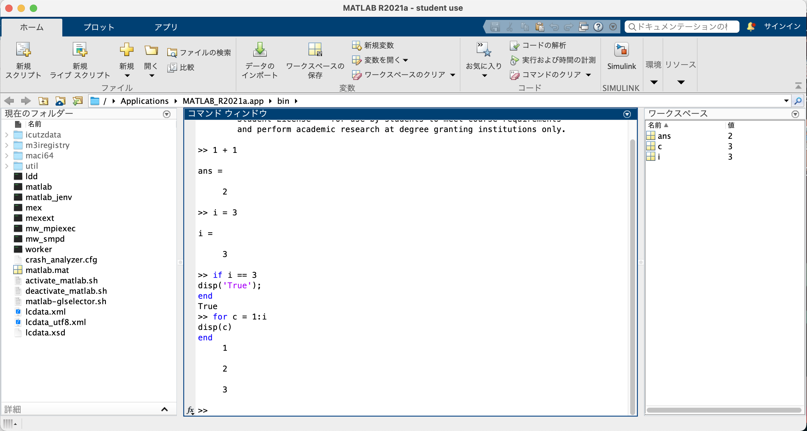

Hello!

・MATLABはインタプリタ型のプログラミング言語です。
・計算処理や作図等が得意な言語であるため、主に分析する際に使われているという印象です。
・私はまだ主要には使用していないのですが、必要に応じて使用していきたいと考えています。
・インストールしたはいいものの、上の動画のように（動かない場合は更新してください）とても遅くて
文字を打つのも一苦労、何をするのにも時間がかかってストレスだった。
・調べても有益な情報が出てこなかったため、問い合わせて解決策を提示してもらった。
・その方法を共有したい。
①まず、ターミナルを開きチェンジディレクトリを行う。
※これは個人によって違うと思います。
cd /Applications/MATLAB_R2021a.app/bin
②ノーデスクトップに移動する。
./matlab -nodesktop
③そのままターミナル上で下記を打ち込む。
s = settings;
s.matlab.editor.InitializeAtStartup.PersonalValue = 0;
④終了する。
quit
⑤通常の起動方法でMATLABを起動させて解決。
これでMATLABが超遅かった問題が解決しました。
是非、MATLABを使用してこの問題が起きた時は参考にしてみてください。
Fin.